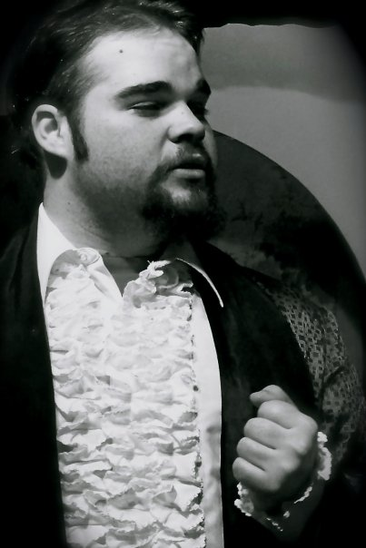

TODD ELDRIDGE
WEB DEVELOPER/WRITER/ACTOR
Main
PROFLILE
Full stack web developer completing course at Austin Coding Academy. Stage actor with Shakespearean experience, as well as stage hand and directing. Writer of novelizations and screenplays.

EDUCATION
Completed GED - 2006
Attended South Plains College 2007-2008
Music Theory, Elective CoursesAustin Coding Academy 2020
Full Stack Web DeveloperSKILLS
Proficient with most power tools and tall ladders.
Have run wire through housing
Can type 10-key by touch and 120 wpm+
Been in charge of groups as large as 20
Ability to navigate multiple programs quickly
EXPERTISE
Line Cooking
Drumming
January 2003 - June 2020
- Dairy Queen 2003-2004
- Showplace 6 - Assistant MGR 2004-2008
- Stennocall - inbound csr 2008-2008
- Limosuine Detailer 2008-2009
- Rib Crib 2008-2009
- Cellar Beer Barn 2008-2009
- Walden Books 2009-2011
- CiCi's Pizza 2010-2010
- TTU Museuem Natural History - Security 2010-2011
- Dominos - Assistant MGR 2011-2013
- RGIS - Inventory supervisor 2013-2018
- Murphy USA - Assistant MGR 2018-2019
- Cheddars 2019-2020
CURRENT
ACHIEVEMENTS
- Top Gun Counter - RGIS highest counter level
- Manager of Projections & Maintenance - Showplace 6
- Directed Melodrama in the Park
- Lead Role in Two Gentlemen of Verona